Aquella vez · Manual de español
Unidad 5
Gustos y comida
Las cosas que me gustan
Lee el texto y traduce
Hola. Me llamo Alicia y soy astróloga. Viajo en el tren fantasma con Marcos, pero somos muy diferentes.
A mí me gustan las estrellas, la astrología y los misterios del universo. Siempre quiero hablar sobre la energía de los lugares y las señales del destino. Marcos, en cambio, es detective. Él no cree mucho en esas cosas. Prefiere buscar pruebas, hacer preguntas y encontrar explicaciones lógicas.
A mí me gusta mirar la luna por la ventana del tren. Marcos prefiere revisar mapas y documentos. Yo quiero escuchar las historias extrañas de los pasajeros, pero él piensa que muchas personas mienten.
También tenemos gustos diferentes en las estaciones. A mí me gustan las estaciones silenciosas y misteriosas. Marcos prefiere los lugares tranquilos y seguros. Yo digo que algunas cosas no tienen explicación, pero él siempre quiere entender todo.
A veces discutimos un poco por estas diferencias. Sin embargo, me gusta viajar con él porque es inteligente y valiente. Y creo que, en el fondo, el tren fantasma necesita personas diferentes para continuar el viaje.
EjercicioIndica qué cosas le gustan a Marcos y qué cosas le gustan a Alicia
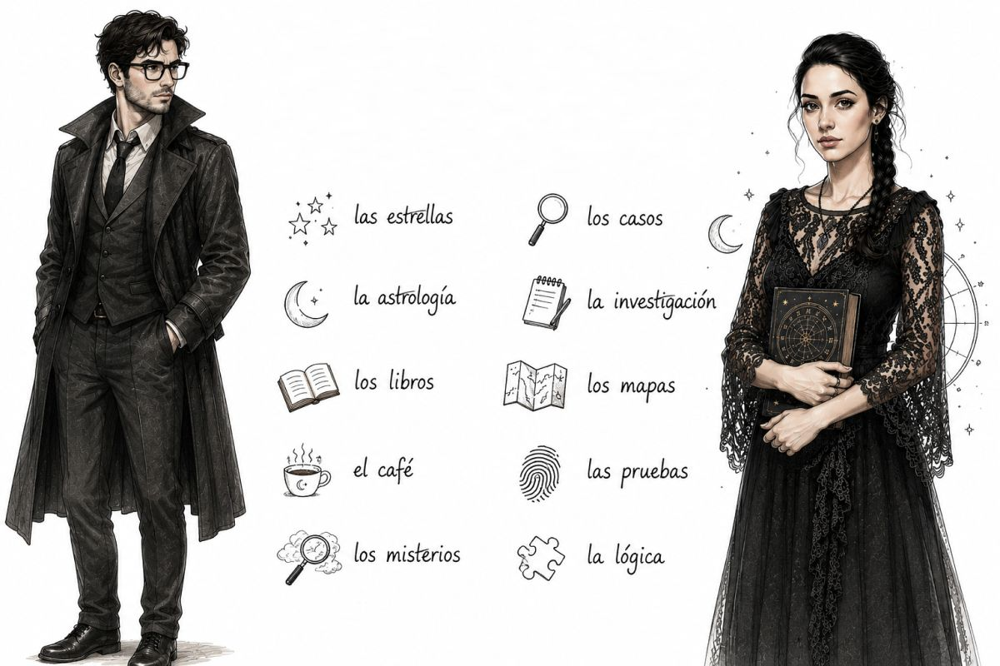
Ejemplo: A Alicia le gustan las estrellas.
EjercicioEscribe dos cosas que te gustan y dos que no te gustan
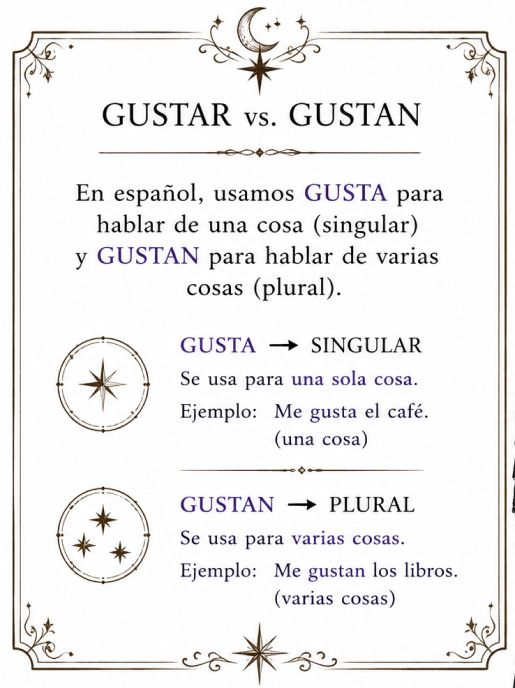
EjercicioContesta las preguntas
A. ¿Te gusta viajar? ¿Por qué?
B. ¿Qué colores te gustan?
C. ¿Dónde te gusta descansar?
D. ¿Con quién te gusta pasar las vacaciones?
EjercicioCompleta las oraciones con el pronombre correcto (me / te / le / nos / les)
A Alicia gusta la astrología.
A Marcos gustan los mapas antiguos.
A mí gusta el café.
A nosotros gustan los misterios.
A ustedes gusta el tren fantasma.
A ti gustan las estrellas.
A Marcos y Alicia gusta viajar en tren.
A los detectives gustan las pruebas.
A Alicia gustan los libros de astrología.
A mí y a Marcos gusta investigar.
Ejercicio6. Escribe gusta o gustan
Me la luna.
Le los mapas.
Nos el café.
Te las estrellas.
Les los misterios.
Me la astrología.
Le las pruebas.
Nos viajar en tren.
A Natalia los libros románticos.
A Roberto la música clásica.
A Luis las motos.
A Sasha el chocolate.
A la violonchelista tocar el violonchelo.
A nosotros las películas de misterio.
A ti el té.
A ellos los mapas antiguos.
EjercicioEscribe frases: ¿Qué les gusta a los personajes?
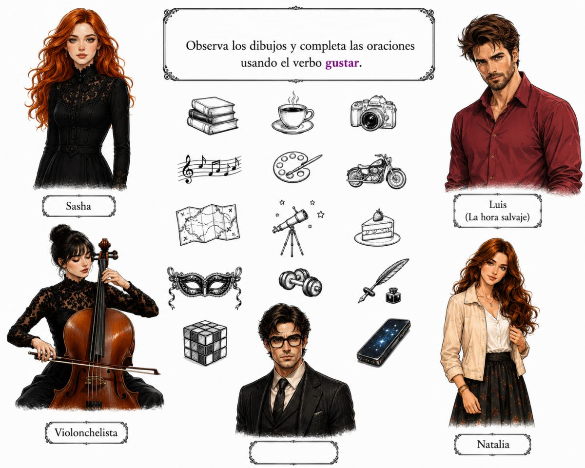
Ejemplo: Yo creo que a Natalia le gusta escribir. A mí me parece que a Sasha le gusta la pintura.
Lista de objetos:
- Los libros
- El café
- La cámara de fotos (sacar fotos)
- La música
- La pintura
- Las motos
- La geografía, los mapas
- La astronomía
- Las tortas
- El carnaval
- Hacer ejercicio
- Escribir
- El cubo mágico (cubo de Rubik)
- Los teléfonos móviles / Los celulares
¡A comer!
La cocina hispana: platos famosos
Lee la lista de platos famosos del mundo hispanohablante.
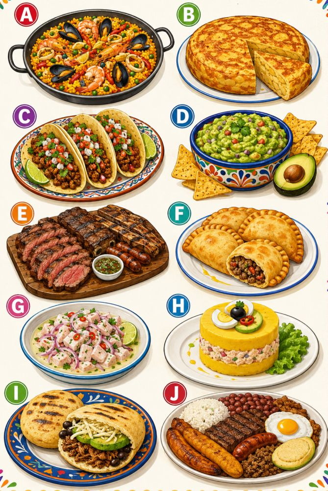
| País | Plato | Descripción |
|---|---|---|
| España | La paella | Arroz con mariscos, pollo o verduras. |
| España | La tortilla española | Tortilla con papas y huevos. |
| México | Los tacos | Tortillas con carne, pollo, pescado o verduras. |
| México | El guacamole | Salsa de aguacate, tomate, cebolla y limón. |
| Argentina | El asado | Carne a la parrilla. |
| Argentina | Las empanadas | Masa rellena de carne, pollo, queso o verduras. |
| Perú | El ceviche | Pescado con limón, cebolla y ají. |
| Perú | La causa limeña | Plato frío con papa, pollo o atún. |
| Colombia | Las arepas | Pan de maíz. Se comen con queso, carne o huevos. |
| Colombia | La bandeja paisa | Plato con arroz, frijoles, carne, huevo y plátano. |
EjercicioContesta las preguntas
a. ¿Cuál es tu plato preferido de la cocina hispana?
b. ¿Te gusta cocinar? ¿Qué sabes hacer?
c. ¿Cuál es la diferencia entre tu cocina y la cocina hispana?
d. ¿Qué restaurantes sueles frecuentar?
EjercicioClasifica los alimentos en la columna correcta
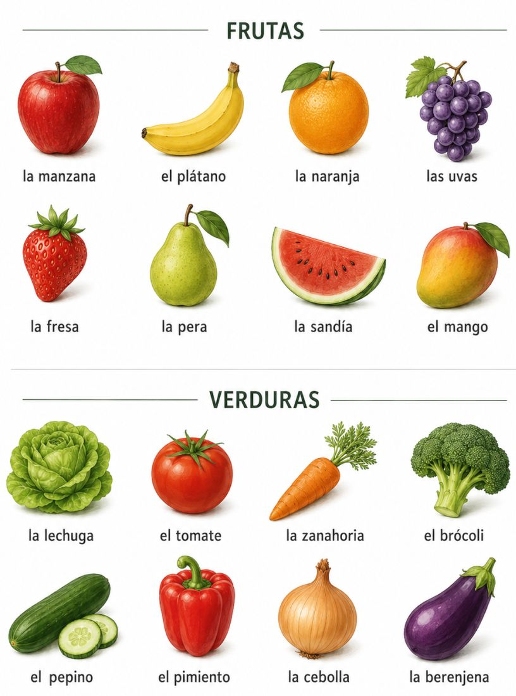
Alimentos: pollo — manzana — queso — arroz — carne de vaca — tomate — leche — pan — pescado — banana — yogur — huevos — lechuga — zanahoria — manteca — pasta — jamón — naranja — crema — aceite
| Carne | Frutas y verduras | Lácteos | Otros |
|---|---|---|---|
Preguntas
¿Qué frutas te gustan?
¿Qué verduras comes normalmente?
¿Tomas leche o yogur?
¿Comes carne, pollo o pescado?
EjercicioCompleta los nombres de los objetos
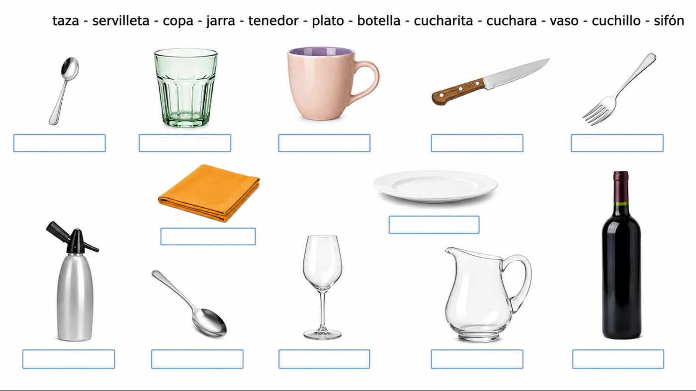
No quiero nada
Lee el texto y contesta las preguntas
HombreMira el menú.
MujerNo quiero nada.
HombreElige algo, por favor.
MujerNo sé. No tengo hambre.
HombreEntonces no comas.
Mujer¿Cómo que no coma?
HombreSí, no comas. Toma solo agua.
MujerNo. Quiero comer algo.
HombreEntonces decide.
MujerNo sé… Todo parece aburrido.
HombreBueno, no pidas nada. Mírame comer.
MujerNo seas malo.
HombreEntonces pide una ensalada.
MujerNo, ensalada no.
HombrePide sopa.
MujerNo, sopa tampoco.
HombreEntonces pide pollo con papas.
MujerMmm… No.
HombrePerfecto. No pidas pollo. Pide solo pan.
Mujer¡No! Quiero pollo con papas.
HombreMuy bien. Díselo al camarero.
CamareroBuenas noches. ¿Qué desean?
HombreTraiga una botella de agua, por favor.
CamareroMuy bien. ¿Y para comer?
HombreHabla tú.
MujerEspere… No sé.
HombreNo la escuche. Ella no quiere nada.
Mujer¡Sí quiero! Tráigame pollo con papas, por favor.
CamareroPerfecto. ¿Y usted, señor?
HombreTráigame una paella pequeña.
CamareroMuy bien. ¿Algo más?
MujerSí. Traiga pan también.
Hombre¿Ves? Ahora sí tienes hambre.
MujerCállate y pide postre después.
HombreDe acuerdo. Come tranquila.
CamareroMuy bien. Enseguida les traigo la comida.
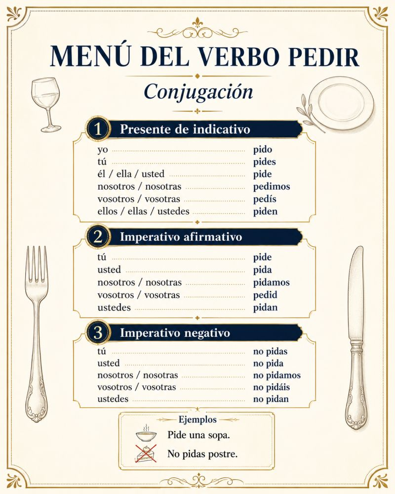
EjercicioPreguntas
- ¿Dónde están el hombre y la mujer?
- ¿Qué mira la mujer?
- ¿La mujer tiene hambre al principio?
- ¿Qué le dice el hombre a la mujer?
- ¿Qué técnica usa el hombre para ayudarla a decidir?
- ¿Qué decide comer la mujer al final?
Explica qué tienen que hacer los personajes
Gramática: tener que + infinitivo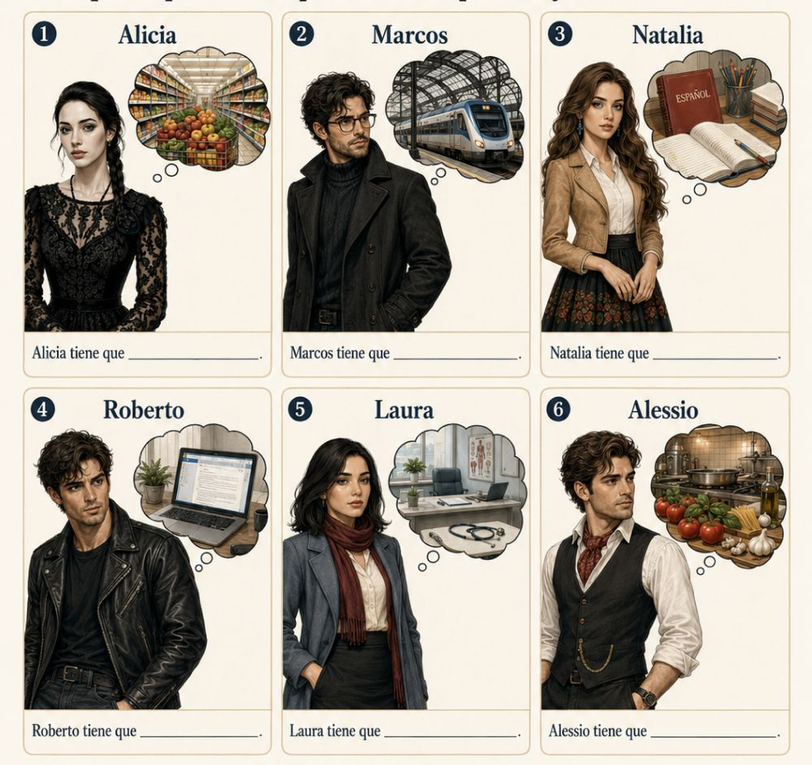
Tener que + infinitivo
Usamos tener que + infinitivo para expresar una obligación, una necesidad o algo que una persona debe hacer.
Estructura: persona + tener conjugado + que + verbo en infinitivo
EjercicioCompleta con la forma correcta de tener
Yo que estudiar español.
Tú que ir al supermercado.
Alicia que comprar frutas.
Nosotros que hacer la tarea.
Ustedes que leer el texto.
Marcos y Natalia que tomar el tren.
Laura no que trabajar hoy.
¿Tú que cocinar?
Verbos parecidos a gustar
Estos verbos funcionan de manera similar a gustar. Usamos pronombres como: me, te, le, nos, les.
✨ Encantar — se usa para expresar que algo gusta muchísimo.
Me encanta la música. · A Natalia le encantan las flores. · Nos encanta viajar en tren.
😊 Alegrar — se usa para expresar felicidad.
Me alegra tu mensaje. · A Roberto le alegran las buenas noticias. · Nos alegra verte aquí.
😍 Interesar — se usa para hablar de intereses.
Me interesa la astrología. · A Luis le interesan los mapas antiguos. · Nos interesa la historia.

Gramática
Querer y poder + infinitivo
Estos verbos se usan muchas veces con otro verbo en infinitivo.
Querer + infinitivo — se usa para expresar un deseo.
Quiero visitar a mi abuela. · Ella quiere aprender español. · Nosotros queremos comer en casa.
Poder + infinitivo — se usa para expresar posibilidad, capacidad o permiso.
¿Puedes venir a mi casa? · No puedo salir porque tengo que estudiar. · Ellos pueden llegar más tarde.
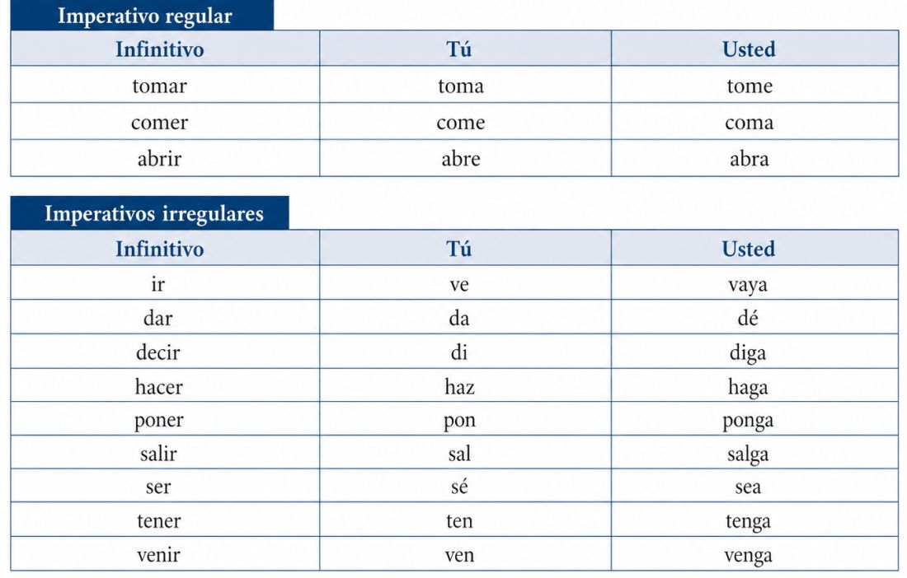
EjercicioCompleta con la forma correcta de querer o poder, según sea necesario.
a. ir a visitar a mi abuela. (yo)
b. No llegar a la estación porque la calle está cerrada. (nosotros)
c. ¿Qué comer para el almuerzo? (ustedes)
d. ¿No avisar antes de venir a mi casa? (tú)
e. Los chicos no salir esta noche porque tienen que trabajar.
f. Todos nosotros vivir en paz.
Ejercicio¿Dónde dicen estas situaciones? Relaciona las frases con los posibles lugares.
1. Deme medio kilo de pan.
2. Pásame la sal, por favor.
3. Tráigame un poco de agua, por favor.
4. Disculpe, ¿me dice la hora?
5. Ve a abrirle la puerta a mamá.
6. Pase y siéntese, por favor.
7. Abre el libro en la página doce.
8. Dame una servilleta, por favor.
a. En el consultorio del médico.
b. En la clase de español.
c. En casa.
d. En la calle con un desconocido.
e. En el restaurante.
f. En la cena familiar.
g. En la panadería.
h. En una cafetería.
El verbo gustar
El verbo gustar se usa para hablar de gustos y preferencias. En español, normalmente no decimos:
Yo gusto el café. ❌
Decimos:
Me gusta el café. ✅
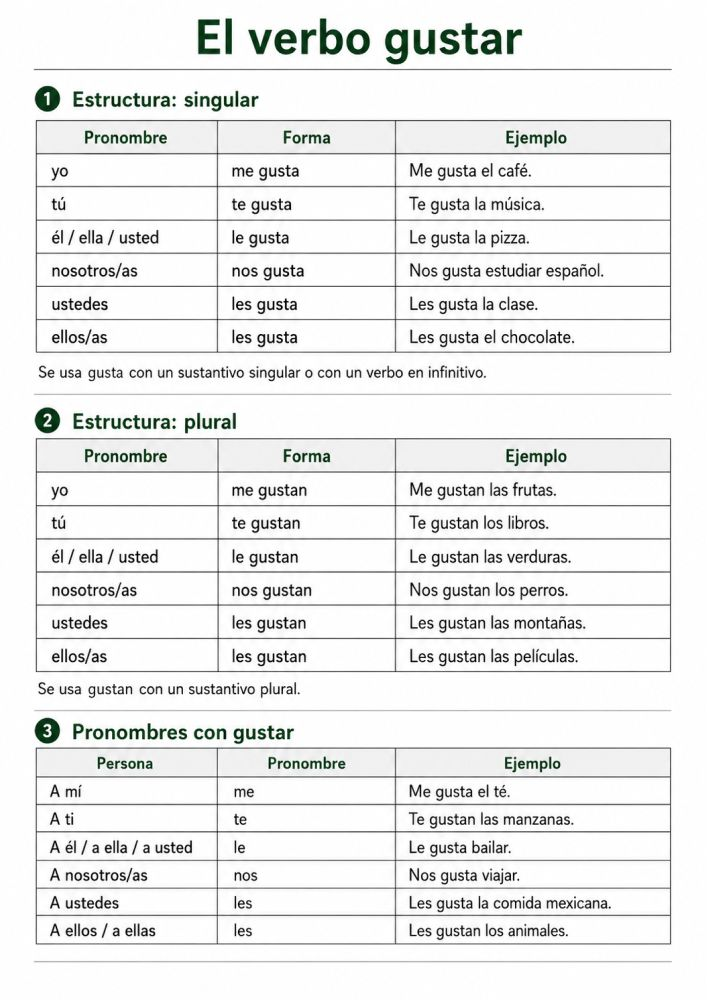
Ejercicio3. Completa con gusta o gustan
Me el café.
Me las frutas.
A Natalia le la música.
A Juan le los deportes.
Nos estudiar español.
Les las verduras.
¿Te el chocolate?
¿Te las manzanas?
No me la cebolla.
No nos los lunes.
Ejercicio4. Completa con me, te, le, nos o les
A mí gusta la pizza.
A ti gustan los libros.
A él gusta el arroz.
A nosotros gusta cocinar.
A ustedes gustan las películas.
A ellas gusta bailar.
A María gustan las flores.
A mis amigos gusta el fútbol.
Ejercicio5. Ordena las frases
gusta / me / el pan →
gustan / te / las uvas →
no / le / gusta / la sopa →
nos / las verduras / gustan →
¿ / gusta / te / el café / ? →
les / no / gustan / los tomates →
Ejercicio6. Escribe frases con gustar
Ejemplo: yo / la música → Me gusta la música.
yo / el té →
tú / las frutas →
ella / el pescado →
nosotros / cocinar →
ustedes / las verduras →
ellos / los perros →
Ejercicio7. Responde sobre ti
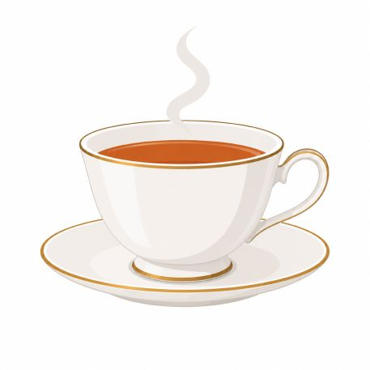
- ¿Te gusta el café?
- ¿Te gustan las frutas?
- ¿Te gusta cocinar?
- ¿Te gustan las verduras?
- ¿Qué comida te gusta mucho?
- ¿Qué comida no te gusta?
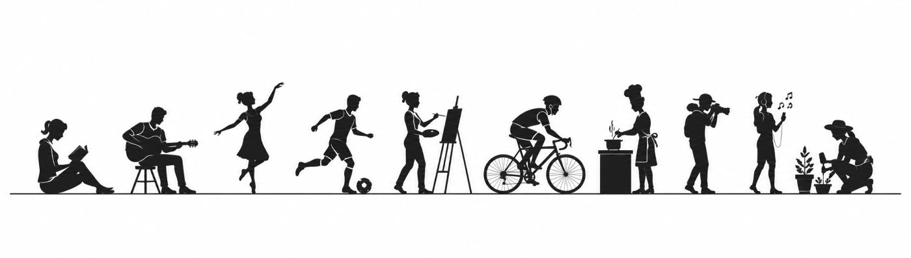
Cultura
Los gustos de los hispanohablantes
Lee el texto y contesta las preguntas.
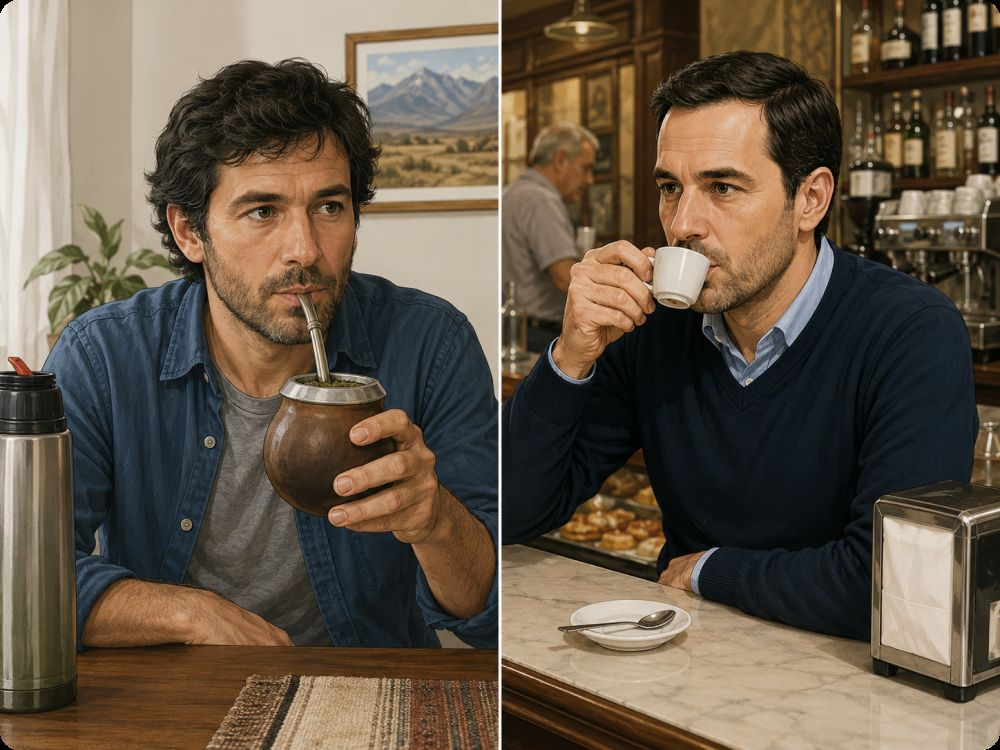
En el mundo hispanohablante hay muchos países y muchas formas de vivir. Cada país tiene sus costumbres, su comida, su música y sus actividades favoritas.
A los españoles les gusta mucho salir. En España, muchas personas salen a caminar, van a bares, comen tapas con amigos o se sientan en una terraza para tomar algo. También les gusta pasar tiempo con la familia y disfrutar de las fiestas locales.
A los argentinos les gusta reunirse con amigos y familia. Les gusta tomar mate, comer asado y conversar durante mucho tiempo. También les gusta mucho el fútbol, la música y salir a caminar por la ciudad. En muchas ciudades, la vida social es muy importante.
A los mexicanos les gusta celebrar. En México hay muchas fiestas, colores, música y comidas tradicionales. A muchas personas les gusta comer tacos, escuchar música, bailar y reunirse con la familia. También les gusta mucho visitar mercados y plazas.
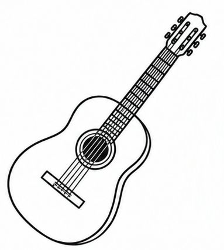
A los colombianos les gusta la música y el baile. En Colombia, muchas personas disfrutan de la salsa, el vallenato y otros ritmos. También les gusta salir con amigos, tomar café y conversar. La familia y la alegría son muy importantes en la vida diaria.
A los peruanos les gusta mucho la comida. Perú es famoso por su gastronomía. A muchas personas les gusta comer ceviche, pollo a la brasa y otros platos típicos. También les gusta reunirse con la familia, visitar mercados y disfrutar de la música tradicional.
Aunque cada país es diferente, en general a los hispanohablantes les gusta compartir momentos con otras personas. Les gusta conversar, comer juntos, salir, escuchar música y disfrutar de la vida social.
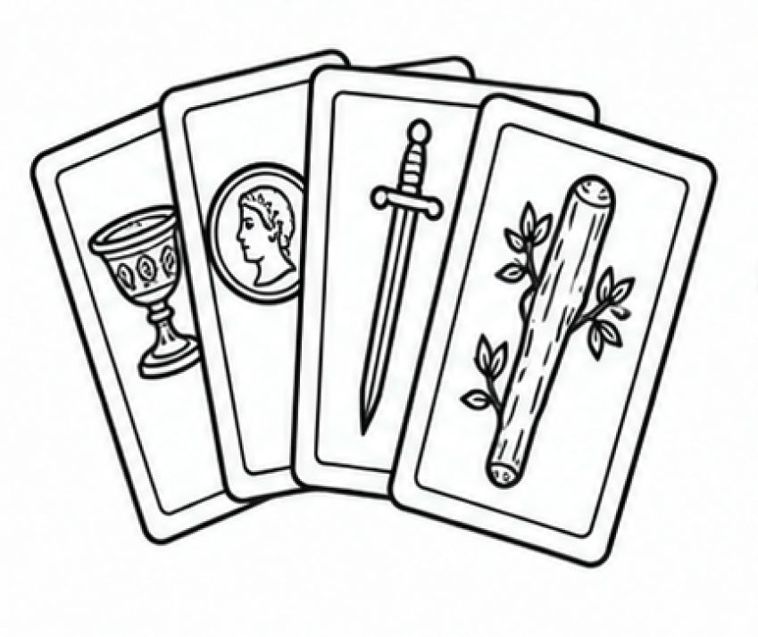
EjercicioPreguntas
- ¿Qué les gusta hacer a los españoles?
- ¿Qué les gusta tomar a los argentinos?
- ¿Qué les gusta celebrar a los mexicanos?
- ¿Qué música les gusta a muchos colombianos?
- ¿Qué te gusta hacer con tus amigos?
- ¿Te gusta salir o prefieres quedarte en casa?
- ¿Qué actividades son importantes en tu país?
Historieta
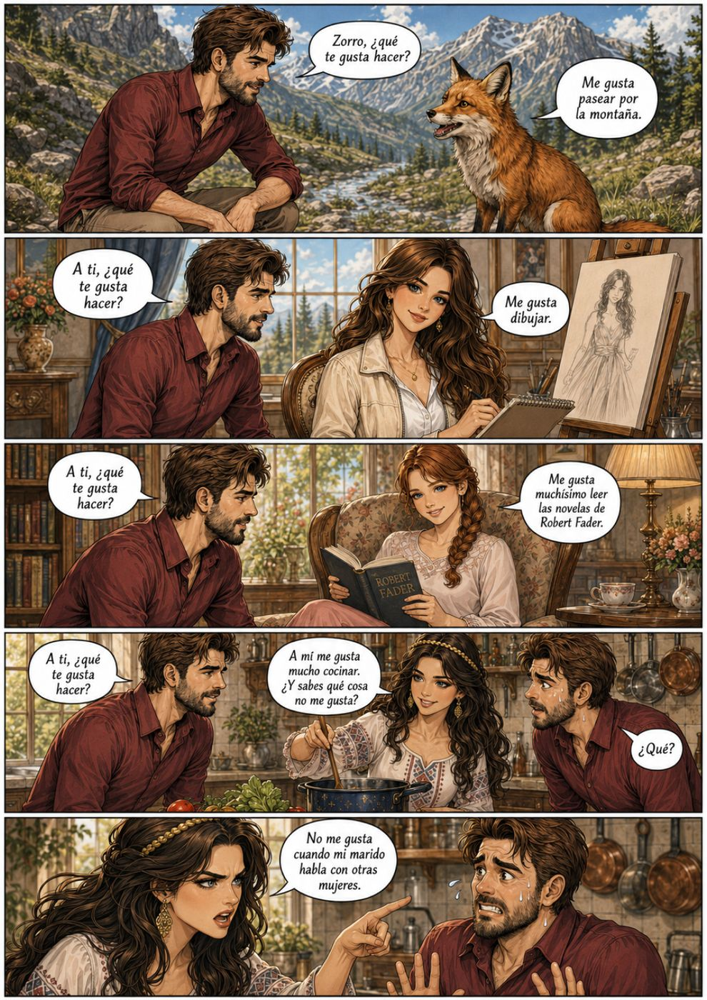
Notas importantes
Gramática y vocabulario para comunicarte
1. El verbo gustar
• Gusta (singular): Me gusta leer.
• Gustan (plural): Me gustan los perros.
• Te gusta (a ti), le gusta (a él/ella), nos gusta (a nosotros/as), les gusta (a ellos/as).
2. Vocabulario de alimentos
• Frutas: manzana, plátano, mango.
• Platos típicos: paella, tacos, arepas, empanadas.
• Bebidas: agua, jugo, café, té.
3. Tener que + infinitivo
• Obligación: Tengo que estudiar para el examen.
• Tú tienes que, él/ella tiene que, nosotros/as tenemos que, ellos/as tienen que.
4. Querer y poder + infinitivo
• Deseo: Quiero comer una manzana.
• Capacidad/permiso: Puedo hablar español.
• Quieres, quiere, queremos, quieren / Puedes, puede, podemos, pueden.